目 次
１-１ 賃金台帳台帳作成型手入力を実行する
賃金管理メニューより賃金台帳台帳作成型手入力を実行します。
１-２ 入力画面設定画面で設定を行う
賃金台帳手入力画面の入力を行う上で必要となる設定を行います。
１-３ 賃金台帳（賃金管理）を入力する
賃金データ入力の手順についてポイントを説明します。
｜ポイント｜
① 連続入力にチェックを付けると、各社員の賃金データを連続で入力することができます。
｜手順｜
１．連続入力にチェックを付ける
２．処理コードを「賃金データ入力」に設定して実行ボタンをクリック、又は をクリックする
をクリックする
３．入力状態になっていることを確認し、賃金データを入力する
４．完了ボタンを１回クリックすると、画面が確認状態になることを確認し、画面の確認ができたらもう１度完了ボタンをクリックする
５．次の社員に切り替わっていることが確認できます。
※ チェックボックスは、いつでもチェックを付けたり外したりすることができます。
② 所定自動入力にチェックを付けると、「事業所情報」で設定された「所定労働日数」「所定労働時間数」が自動入力されます。
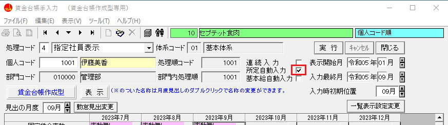手順は①と同様です。
｜ポイント｜
画面を編集状態にしただけでは数値は入力されません。
入力したい月度の所定労働日数欄と所定労働時間数欄をクリックすると、値が自動入力されます。
又、労働日数欄に値を入力してから労働時間数欄をクリックすると、労働時間数欄に値が自動入力されます。
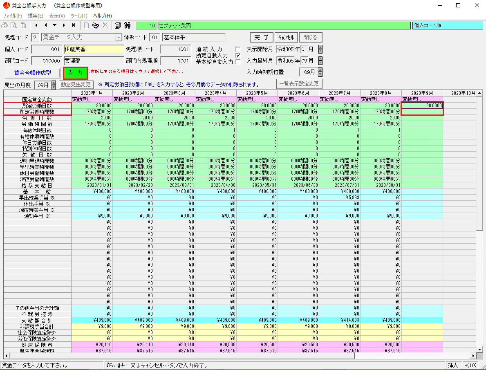※ チェックボックスは、いつでもチェックを付けたり外したりすることができます。
③ 基本給自動入力にチェックを付けると、個人情報管理メニューの個人給与情報訂正で設定された基本給と事業所情報管理メニューの事業所所定・給与訂正で設定された給与支給日が自動入力されます。
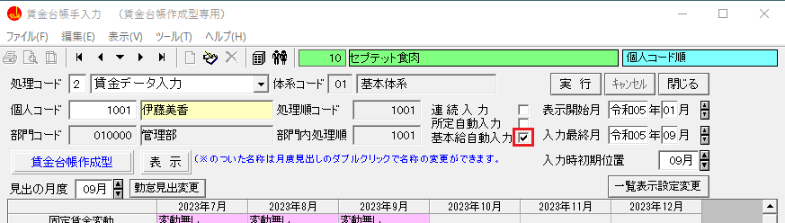手順は①と同様です。
｜ポイント｜
②と同様に、画面を編集状態にしただけでは数値は入力されません。
入力したい月度の基本給欄をクリックしてください。
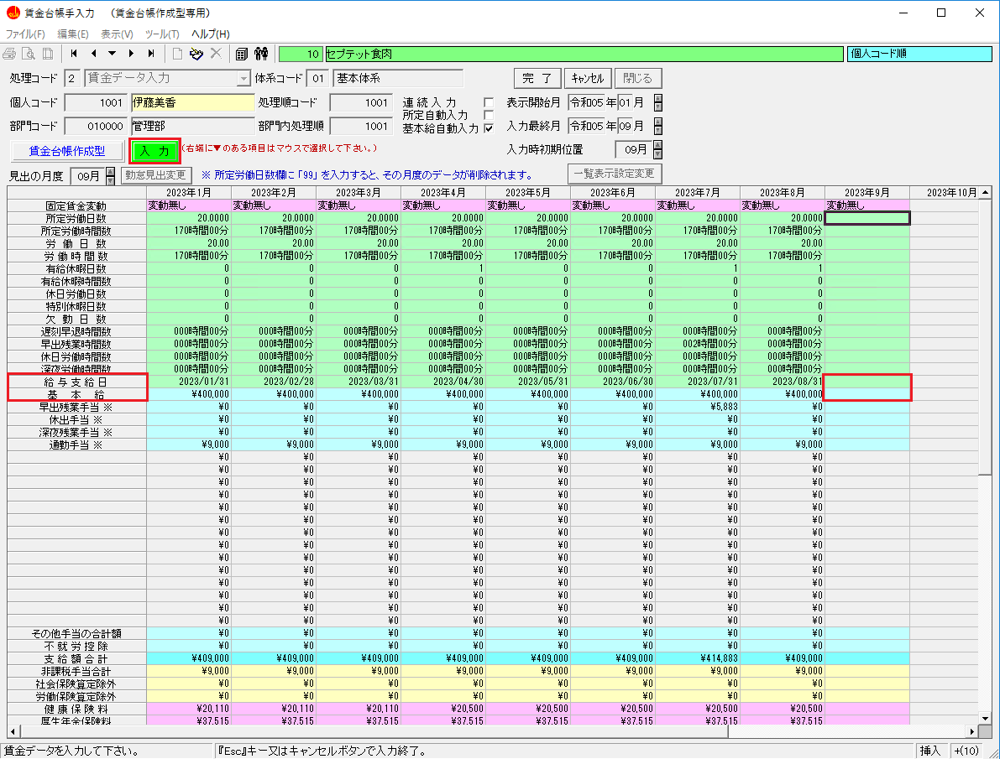｜注意｜
給与区分が日給月給と月給の場合のみ自動入力が可能です。日給、時間給、その他の場合は自動入力されません。
※ チェックボックスは、いつでもチェックを付けたり外したりすることができます。
④ 給与支給日
｜ポイント｜
入力画面設定画面の【その他手当欄・その他控除欄 入力方法】にて
a)「常に入力可」を選択した場合
支給額か、控除額を￥１以上値を入力した場合に自動入力されます。
b)「常に、支給・控除合計から逆算」を選択した場合
支給額合計または控除額総合計に￥１以上値を入力した場合に自動入力されます。
c)「支給・控除項目名が全て設定済の時のみ、合計から逆算を選択した場合
⑤ 給与項目設定で、年の途中から項目名称や項目の位置が変更になっている場合、見出の月度を変更すると、その月度以降に設定された給与項目が表示されます。
⑥ 「所定労働日数」～「深夜労働時間数」までの勤怠の１２項目は、原則として固定されており、変更することは出来ません。
しかし、見出しを変更することはできます。
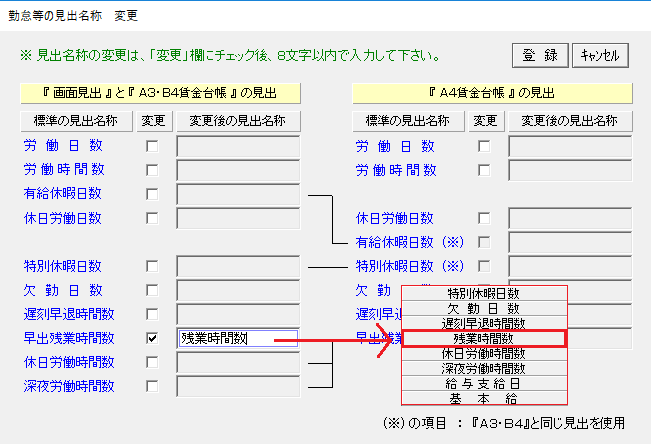｜ポイント｜
・変更したい名称にチェックを付けると、名称が入力出来ます。
・賃金台帳は、サイズによって表示できる勤怠項目の内容が決まっています。
・「登録」をクリックすると賃金管理データの項目名称が変更されます。
合計欄について
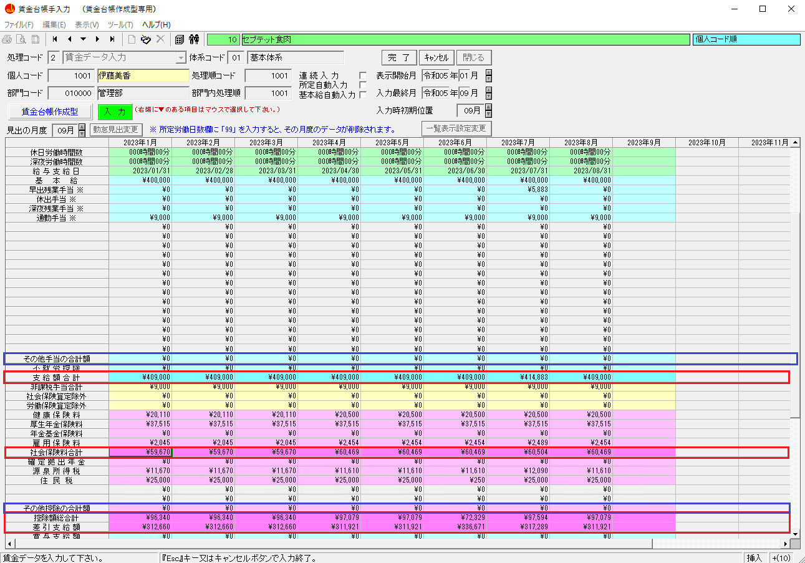｜ポイント｜
① 支給額合計・社会保険料合計・控除額総合計、差引支給額は、自動計算されます。(赤い枠線)
② １８項目以上の支給項目は、その他手当の合計額、２項目以上の控除項目は、その他控除の合計額にまとめて登録します。(青い枠線)
賞与支給日
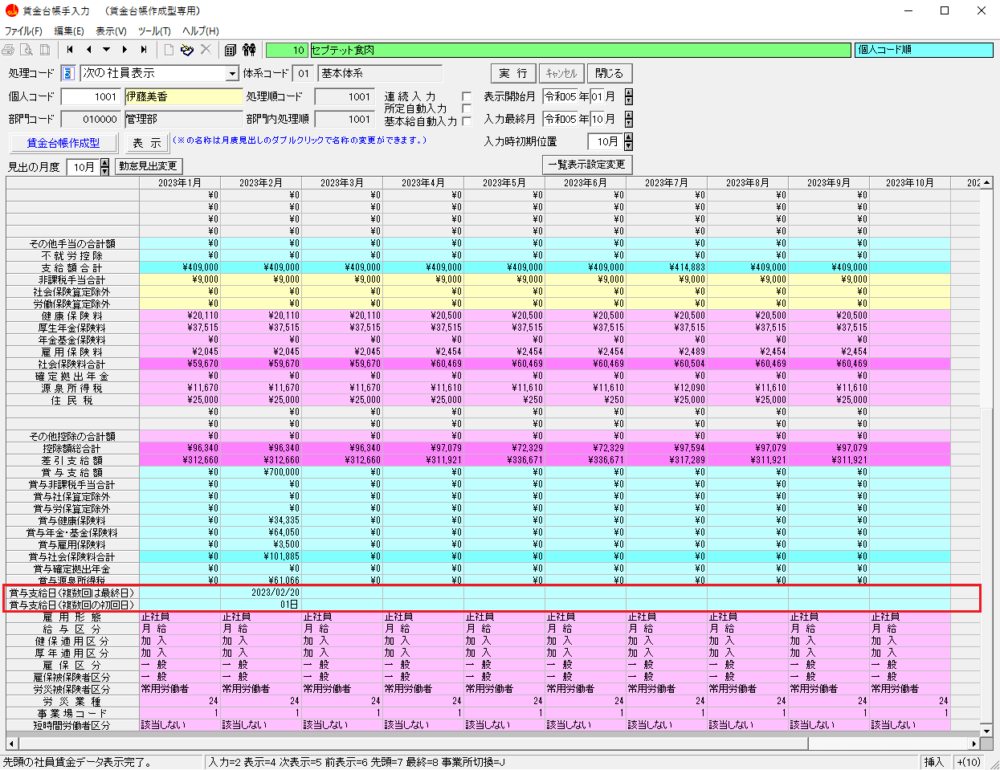賞与支給額欄に値を入力すると、「賞与支給日（複数回は最終日）」が表示されます。
賞与支給日が異なる場合は変更入力してください。
「賞与支給日（複数回の初回日）」は賞与が同じ月に複数回支給された場合は、初回の支給日を入力してください。
賞与計算メニューより作成した場合
一人の人に１ヶ月複数回賞与の支給があった場合、賃金管理データの賞与支給最終日と賞与支給初回日を自動的に設定します。
支給日が月に１回だけの人は｢最終日｣だけに支給日が設定されます。
雇用形態～短時間労働者
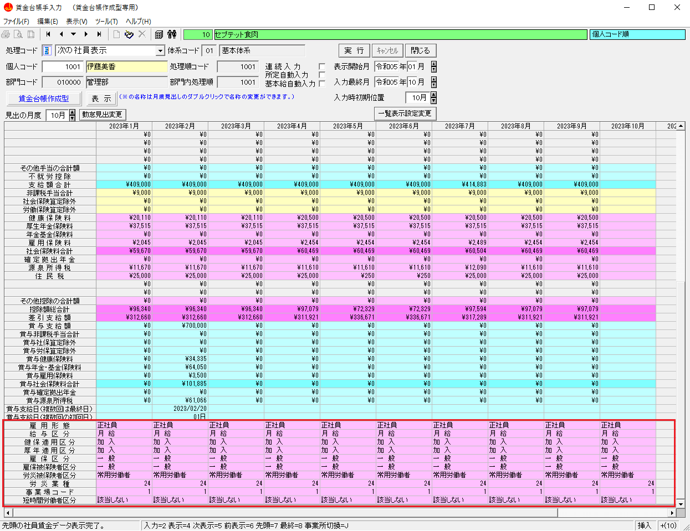雇用形態～短時間労働者は、個人情報管理メニューの個人基本情報新規登録で登録したデータが表示されます。
｜ポイント｜
固定賃金変動
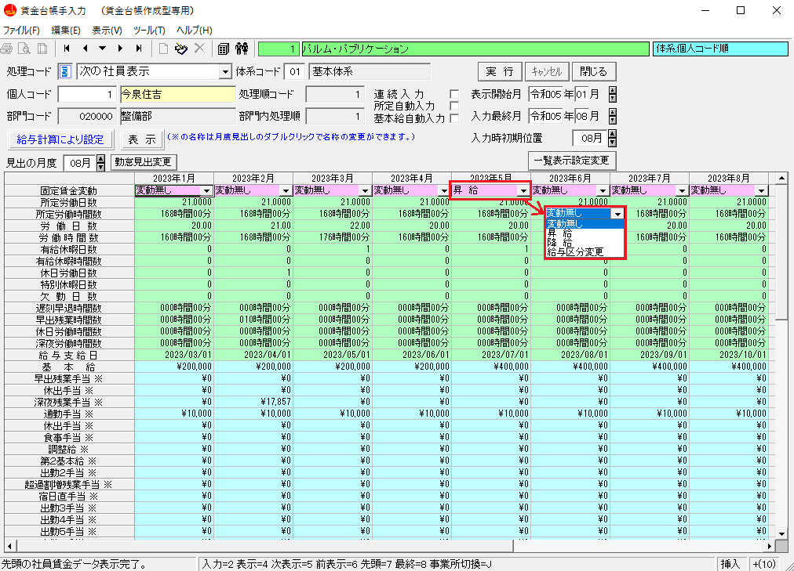該当月の固定的賃金の変動の有無（月変に使用）がある場合は、該当月の固定賃金変動欄に反映されます。
｜ポイント｜
この入力画面では、昇降給差額は入力できません。
入力に関しましては「賃金変動や健康保険などの加入状況を変更する場合」を参照してください。
｜重要｜
固定的賃金変動欄は、月変を検索するための項目となります。
この欄が、「昇給」「降給」「給与区分変更」になっていると、社保雇用業務メニューの[月変処理]の賃金変動対象者一括検索画面に表示され、月変を検索する対象者となります。
１-４ 支給項目と控除項目の名称を設定する
初めて賃金台帳（賃金管理）を入力する場合は支給項目と控除項目の名称が設定されていません。
ここでは項目名称の設定方法について解説します。
一覧内のどこかをダブルクリックすると手当・控除名称設定画面が表示され、項目名称が入力できます。
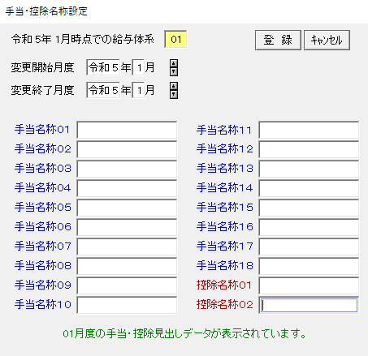１-５ 賃金台帳（賃金管理）を削除する
賃金台帳（賃金管理）を削除する手順について解説します。

{kind=link}
{kind=link}
{kind=link}
{kind=link}
{kind=link}
{kind=link}
{kind=link}
{kind=link}
{kind=link}
{kind=link}
{kind=link}
{kind=link}
{kind=link}
{kind=link}
{kind=link}
{kind=link}
{kind=link}
{kind=link}
{kind=link}
{kind=link}
{kind=link}
{kind=link}
{kind=link}
{kind=link}
{kind=link}
{kind=link}
{kind=link}
{kind=link}
{kind=link}
{kind=link}
｜ポイント｜
① その他手当欄・その他控除欄 入力方法
支給項目は最大１８項目、控除項目は最大２項目を設定することができます。
最大項目数を超えた項目がある場合は、それらの項目の金額を合計して、その他手当の合計額やその他控除の合計額に入力します。
ここでは、最大項目数を超えた場合にどのように入力するのかを設定します。
a)「常に入力可」を選択した場合
その他手当の合計額とその他控除の合計額は、常に手入力することができます。
※ 支給額合計と控除額総合計は自動計算されますので入力はできません。
計算方法の説明
基本給～その他手当の合計額の合計 － 不就労控除が支給額合計に表示されます。
b)「常に、支給・控除合計から逆算」を選択した場合
その他手当の合計額とその他控除の合計額は、常に支給額合計と控除額総合計から逆算して表示されます。（入力はできません）
※ 支給額合計と控除額総合計は常に手入力することができます。
計算方法の説明
支給額合計 － （基本給～支給項目（最大１８項目）の合計 － 不就労控除）がその他手当の合計額に表示されます。
c)「支給・控除項目名が全て設定済の時のみ、合計から逆算を選択した場合
「常に入力可」と「常に、支給・控除合計から逆算」の組み合わせとなります。
支給項目は最大の１８項目が設定済み、控除項目は最大の２項目が設定済みの場合は、「常に、支給・控除合計から逆算」と同じです。逆に、設定済みでない場合は「常に入力可」と同じです。
支給項目は最大の１８項目が設定済み、控除項目は最大の２項目が設定済みとは
支給項目の１８項目が全て設定されていることとは異なります。
支給項目の１８項目目（その他手当の合計額の上）が設定されていることが条件となりますので注意してください。
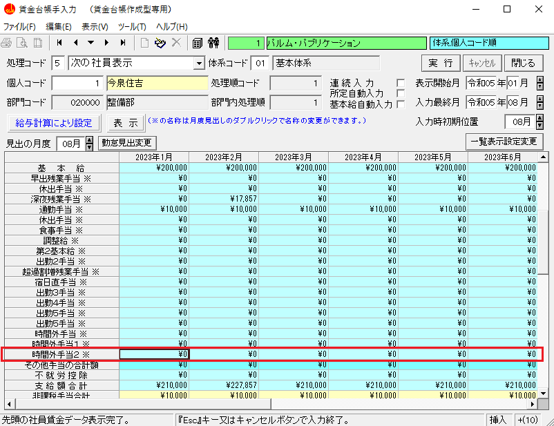入力画面の色について説明します。
入力できる項目は薄い色で表示され、入力できない項目は濃い色で表示されます。
支給項目の例
入力できる項目は薄い水色で表示されます。
入力できない項目は濃い水色で表示され自動計算されます。
② 半日有給休暇（0.5日）の使用状況
有給時間を日で入力した有給日数のデータがあった場合の、変換方法を選択します。
a)「半日有給休暇を使用する」を選択した場合
例．１．６２５の場合 １．５日と１時間で入力します
b)「半日有給休暇を使用しない」を選択した場合
例．１．６２５の場合 １．０日と５時間で入力します
③ 小数点以下桁数 設定
所定労働の日数、労働日数、休日労働の日数、特別休暇の日数、欠勤日数を何桁まで表示するかを０～４桁の範囲内で指定できます。
｜ポイント｜
・給与項目設定で、日数の小数点以下の桁数を設定している場合に、賃金管理データの日数の桁数 を合わせます。給与項目設定で、小数点以下桁数が設定されているのに、賃金管理データ作成時に小数点以下 桁数が設定されていない場合は、自動的に丸められてしまいます。
※ 小数点以下を（多桁→少桁に）変更するとデータの内容も指定の桁数にまるめられ元の値には戻りませんので、ご注意ください。
④ 入力順
画面に表示する社員の順番を、何を基準にするか指定します。
｜ポイント｜
部門,部門内連番順を選択したら、特定の人が表示されない場合に、原因として部門内連番が重複していたということがあります。
事業所情報管理メニューの「部門コード登録」から部門コードを変更してください。
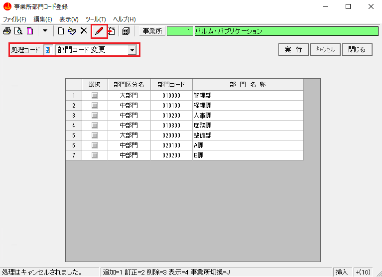